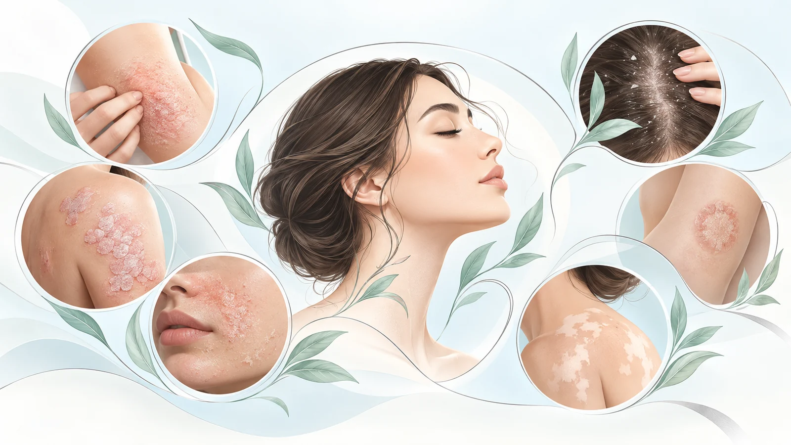
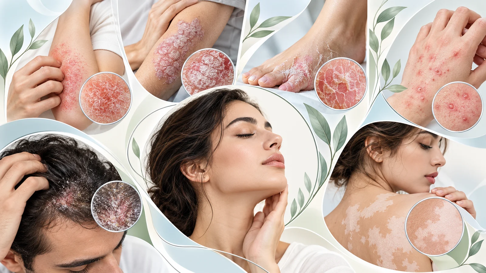
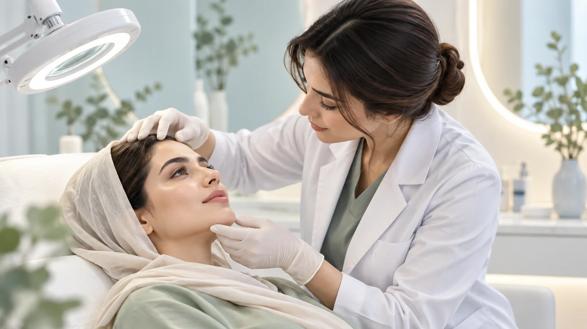

چه علائمی میتوانند نشانه بیماریهای پوستی باشند؟
بیماریهای پوست و پوست سر میتوانند با علائم متفاوتی ظاهر شوند. خارش، قرمزی، پوستهریزی، خشکی یا التهاب پوست، تغییر رنگ، ایجاد ضایعات یا بثورات پوستی، تاول، زخم و تغییرات پوست سر از جمله علائمی هستند که ممکن است در بیماریهای مختلف دیده شوند.
از آنجا که بعضی بیماریهای پوستی میتوانند ظاهر مشابهی داشته باشند، وجود یک علامت بهتنهایی برای تشخیص علت آن کافی نیست. برای مثال، خارش و پوستهریزی ممکن است در اگزما، درماتیت سبورئیک، پسوریازیس یا برخی عفونتهای قارچی دیده شود، در حالی که درمان این بیماریها متفاوت است.
به همین دلیل، بررسی نوع ضایعه، محل و نحوه گسترش آن، مدت زمان بروز علائم و سابقه فرد در تشخیص و انتخاب درمان مناسب اهمیت دارد.

چه بیماریهایی در مطب بررسی و درمان میشوند؟
در مطب، طیف مختلفی از بیماریهای شایع پوست و پوست سر بررسی و درمان میشوند، از جمله:
اگزما و انواع درماتیت
بررسی علائمی مانند خشکی، خارش، قرمزی و التهاب پوست و انتخاب درمان بر اساس نوع و علت احتمالی درماتیت.
درماتیت سبورئیک
بررسی پوستهریزی، قرمزی و خارش پوست سر یا نواحی چرب صورت و کمک به کنترل علائم و عود بیماری.
پسوریازیس
بررسی ضایعات پوستی و پوست سر و انتخاب برنامه درمانی متناسب با نوع، محل و شدت درگیری.
عفونتهای قارچی پوست و پوست سر
تشخیص و درمان عفونتهای قارچی با توجه به محل و نوع درگیری و افتراق آنها از سایر بیماریهای مشابه.
گال (Scabies)
بررسی خارش و ضایعات مشکوک به گال و در صورت تشخیص، درمان فرد مبتلا و ارائه توصیههای لازم برای جلوگیری از انتقال و ابتلای مجدد.
عفونتهای باکتریایی و ویروسی پوست
بررسی و درمان عفونتهای شایع پوستی و تشخیص مواردی که به بررسی یا درمان تکمیلی نیاز دارند.
ویتیلیگو (برص)
بررسی لکههای سفید و تغییرات رنگدانهای پوست، افتراق آنها از سایر علل کاهش رنگ پوست و انتخاب برنامه درمانی متناسب با شرایط فرد.

بیماریهای پوستی چگونه بررسی و تشخیص داده میشوند؟
بررسی بیماریهای پوستی با توجه به ظاهر و محل ضایعات، نحوه و زمان شروع علائم، روند گسترش یا تغییر آنها، علائم همراه و سابقه پزشکی و دارویی فرد انجام میشود.
در بسیاری از موارد، معاینه پوست بخش اصلی ارزیابی است. بسته به نوع ضایعه و تشخیصهای احتمالی، ممکن است بررسیهای آزمایشگاهی یا سایر بررسیهای تکمیلی نیز لازم باشد.
از آنجا که بیماریهای مختلف پوستی ممکن است علائم مشابهی ایجاد کنند، هدف از ارزیابی، افتراق علل احتمالی و انتخاب درمان متناسب با تشخیص و شرایط هر فرد است.

روش درمان بیماریهای پوست و مو چگونه انتخاب میشود؟
روش درمان بر اساس نوع بیماری، شدت و محل درگیری، مدت زمان علائم، شرایط پوست و وضعیت کلی فرد انتخاب میشود. به همین دلیل، درمان یک علامت مشابه مانند خارش، قرمزی یا پوستهریزی ممکن است در بیماریهای مختلف متفاوت باشد.
بسته به تشخیص، برنامه درمانی میتواند شامل داروهای موضعی یا خوراکی، محصولات مراقبتی مناسب و توصیههایی برای کنترل عوامل محرک یا پیشگیری از عود و انتقال بیماری باشد.
در بیماریهای مزمن مانند اگزما، درماتیت سبورئیک و پسوریازیس، علاوه بر کنترل علائم، مراقبت و پیگیری برای کاهش دفعات یا شدت عود نیز میتواند بخشی از برنامه درمانی باشد.
سوالات متداول درباره بیماریهای پوست و مو
آیا خارش و پوستهریزی پوست همیشه به دلیل قارچ است؟
خیر. خارش و پوستهریزی میتوانند در بیماریهای مختلفی مانند اگزما، درماتیت سبورئیک، پسوریازیس و عفونتهای قارچی دیده شوند. تشخیص علت بر اساس محل و ظاهر ضایعات، علائم همراه و معاینه انجام میشود.
آیا اگزما و پسوریازیس مسری هستند؟
خیر. اگزما و پسوریازیس بیماریهای مسری نیستند و از طریق تماس با فرد مبتلا منتقل نمیشوند. با این حال، بعضی عفونتهای قارچی، باکتریایی و ویروسی و همچنین گال میتوانند قابلیت انتقال داشته باشند.
آیا درماتیت سبورئیک و شوره سر قابل درمان هستند؟
درماتیت سبورئیک معمولاً میتواند با دورههای بهبود و عود همراه باشد. درمان و مراقبت مناسب به کنترل پوستهریزی، خارش و التهاب کمک میکند، اما در برخی افراد برای کنترل عود به مراقبت مداوم یا دورهای نیاز است.
چه زمانی برای یک ضایعه پوستی باید مراجعه کرد؟
اگر ضایعه پوستی جدید یا ماندگار باشد، گسترش پیدا کند، مرتب عود کند یا با علائمی مانند خارش قابل توجه، درد، ترشح، زخم یا تغییرات واضح همراه باشد، بررسی آن میتواند به تشخیص علت و انتخاب درمان مناسب کمک کند.